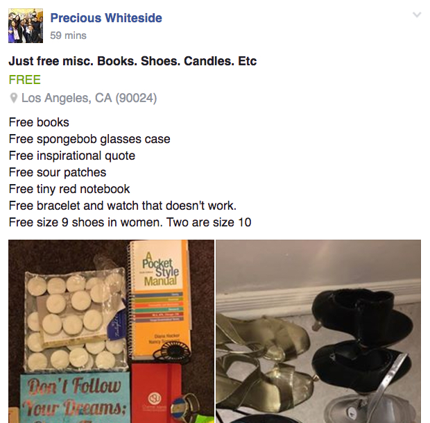
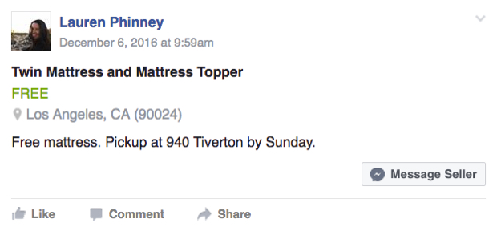
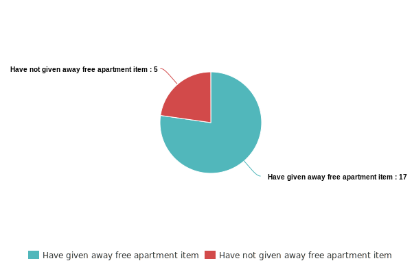
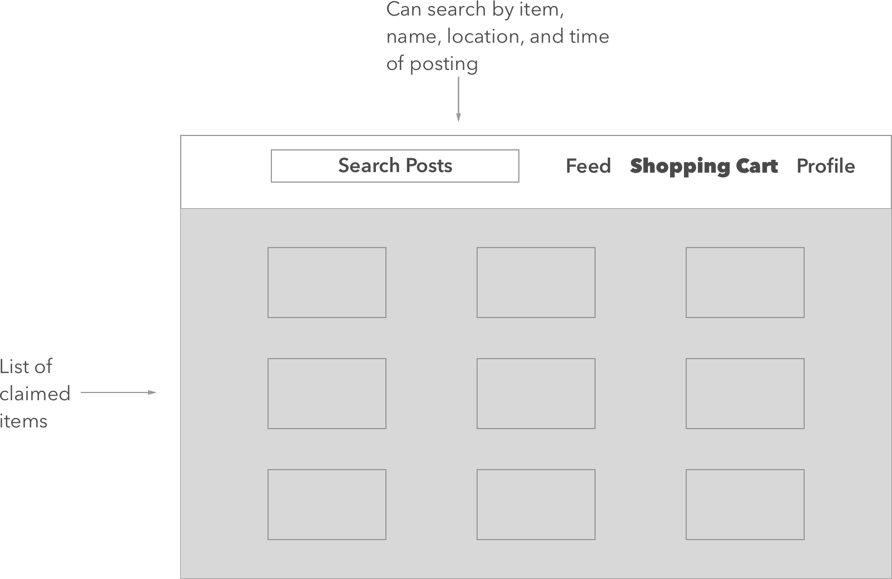
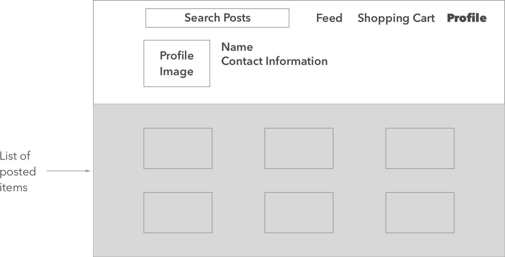
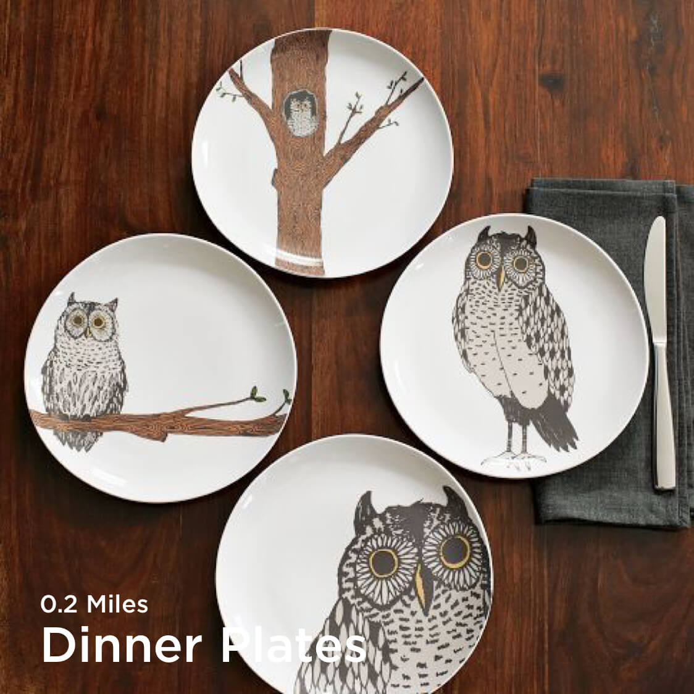

About Page

Last quarter I took a computer science class titled “Scalable Internet Services”. The purpose of the class was to teach students how to build a scalable full stack web application using Ruby on Rails. Although, this was a class focused on purely technical details and results, I approached part of the project a little differently. Essentially, I thought about how I can...
At the end of every school year, college students are moving out of their apartments and looking to get rid of their unwanted stuff. While some resort to selling their items on a Facebook page, many students want to simply get rid of everything as quickly as possible without a concern for making money.
Mrkt is an online marketplace where college students can post their unwanted belongings to be claimed for free. Others can browse public posts, claim an item, and then get in contact with the poster to come pickup the item. Once an item is claimed, the post is removed from the feed of all other users.
I started by studying UCLA’s free and for sale page at the beginning of the quarter (this is the height of when most people are selling/giving away their stuff since leases are ending). I saw that about 1 in 5 posts were offering something for free or at an absurdly low price.
 I also claimed some of the free stuff and bought some of the absurdly cheap items to get a better feel for the process. For the items that I bought, I found that many of the people selling at low prices never ended up charging me for the items and others charged me even less than what was advertised because they were simply looking to get rid of their stuff as quickly as possible.
I also informally surveyed 22 friends. I found that 17 of them, at some point in college, have given away something from their apartment for free. The most popular reason was simply that they were in a hurry and just needed to get rid of their stuff. Furthermore, I found that about half of these giveaways were given to friends, yet when asked about whether or not they would be willing to give away that item to a stranger, nearly all of them said yes.
The main issue with Free and For sale pages on Facebook is that it requires a lot of management on the poster’s side. Poster’s are constantly getting messages and notifications about the post and he/she also has to update the post to say whether or not his/her item has been sold/claimed. This is problematic. People posting items for free on Free and For Sale are doing so because they are in a rush and/or are stressed. They shouldn’t have to constantly be checking Facebook to get something so simple done.
In my interviews I found that most people looking to get rid of stuff for free were in a hurry because their lease was ending and/or they needed to move out ASAP. I took this into account when designing the onboarding process. I wanted to keep it quick. I also took into account people who were simply checking out the site. Thus, I decided to show live posts by people near the user to pique their interest.
The feed displays posts made by nearby posters by utilizing the user’s current location.
If an item is not picked up during the time range determined by the poster, the item is removed from the “claimers” shopping cart and put back in public view. If a “claimer” does this past a certain number of times, the claimer is temporarily banned from the website.
The profile is simply a central page to display a user’s basic information as well as all posts he/she has made. Each post also displays it’s current status (claimed/unclaimed).
The image would be the main focus, and the name and distance from the poster's location would be overlayed on the image. I chose to place the distance over the image by the name to draw attention. A user can hover over the post for a description.
Because a user is free to upload any picture, the application can run into the following problem.
Thus, I needed to figure out a way to place text on any image while keeping it both legible and visually pleasing. There’s a number of approaches…
Another issue with posts can be seen with image file sizes. What if a user were to upload a really large file? Because the application was being developed for scale, I had to take this into account. Having multiple posts in a feed with large image file sizes could significantly slow down the load/rendering times of the pages. Therefore, I utilized ImageMagick to compress each image when uploaded so that no image would exceed a height of 750 pixels while maintaining its dimensional ratio. Having a maximum height for each image also allowed for a more visually appealing feed and an overall better user experience.
I liked some aspects of #2. It was structured and geometrical making it easy to scan for items. But there was a lot of wasted space. It wasn’t the most ideal for feeds that would have lots of posts. It wouldn’t scale well.
Therefore, I decided on #3. The idea was that once a user publishes a post, it will show up on everyone else’s feed in the most optimal location to minimize the total height of everyone’s feed while maintaining a consistent feed width. While it was also a visually pleasing UI, I mainly picked it for UX reasons:
To implement this grid-based feed, I utilized Masonry. Masonry is a JavaScript library that maintains a consistent grid width while keeping the vertical height as small as possible. When a post is added, Masonry positions the element to the grid in the most optimal location such that the width is maintained and the vertical height stays as small as possible.
Another issue that comes up when scaling has to do with the number of posts in a feed. The more posts there are, the longer it will take for the page to load. Therefore, I segmented the posts using pagination (I utilized the ruby gem will_paginate). This way, a feed is broken up into X number of pages with each page holding a specific number of posts.
This allows for an ideal load time and will still show plenty of posts on one page. From a user experience perspective, this is great for load times, yet I don’t think it’s ideal. If I were to go back and re-do the project, I would’ve made use of lazy loading. I feel this is ideal for user experience because the user doesn’t have to click for the next page. Instead the feed will load more posts once the user is at the bottom of the page.